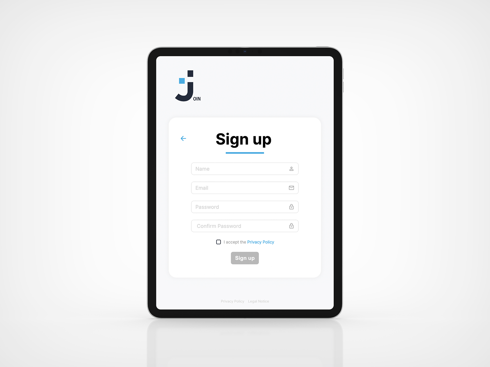
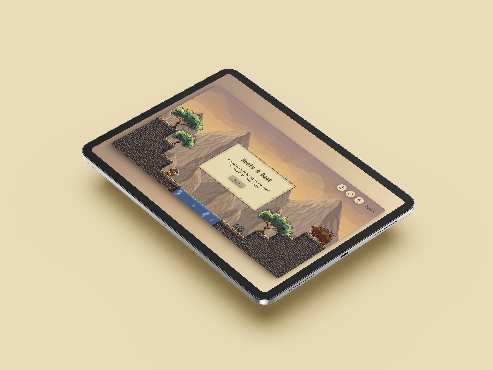
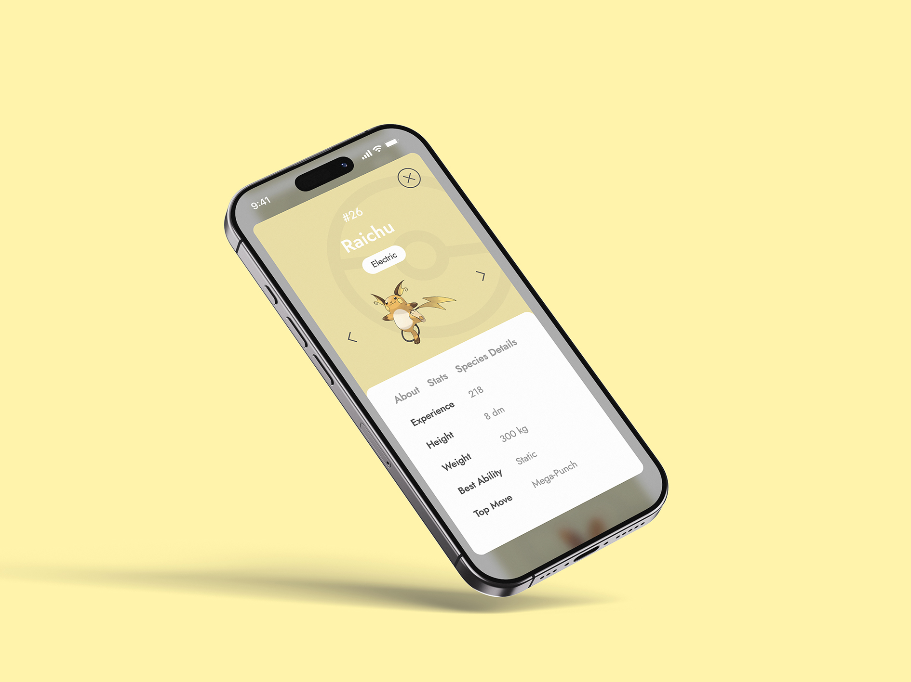

Frontend
Developer
Karina Klages
About Me
My journey from designer to developer gives me a unique perspective: I understand both the creative vision and the technical requirements needed to bring artsy and smart web solutions to life. I enjoy learning new skills and developing user-friendly solutions that are accessible and intuitive to use.
With a diploma in communication design and my skills in frontend development, I am excited to support your team.
Located in Apelern, Niedersachen
Available for remote work

Portfolio
Explore a selection of my work here. Please interact with the projects to see my skills in action.
01/04
The web app "Join" was built using HTML, CSS, JavaScript, Git and Firebase, in collaboration with three other team partners. The app serves as a project management tool that visualises the status and responsibilities of tasks.
02/04
The platformer “Roots & Dust” was developed using JavaScript and object-oriented programming. Please click the live view to help Brave Viking defeat the Dark Knight!


03/04
In this project, a Pokémon trainer registry was developed based on the official PokéAPI. The goal was to make systems and data retrieval compatible. Try to find your favorite Pokémon.
References
I thrive both independently and as part of a team. Here’s what my colleagues have to say about working with me.Karina impressed everyone with her hard work and dedicated approach. With her motivating personality and self-confidence, she strengthened team spirit and made a significant contribution to the group’s progress. She quickly grasped requirements and implemented them in a structured, efficient manner, producing high-quality code. Thanks to her meticulous and detail-oriented work style, she identified errors early on and played a crucial role in achieving a precise and successful final result. She also placed great emphasis on visual details in the design.
Karina impressed everyone with her hard work and dedicated approach. With her motivating personality and self-confidence, she strengthened team spirit and made a significant contribution to the group’s progress. She quickly grasped requirements and implemented them in a structured, efficient manner, producing high-quality code. Thanks to her meticulous and detail-oriented work style, she identified errors early on and played a crucial role in achieving a precise and successful final result. She also placed great emphasis on visual details in the design.